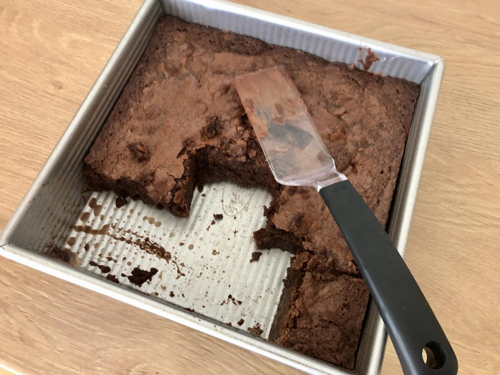

Personal rating: 4 / 5

1 cup unsalted butter, 2 sticks
1 and 1/2 cups semi-sweet or dark chocolate chips, divided
1.5 cups granulated sugar
3/4 cup brown sugar
1 Tbsp vanilla extract
1 tsp salt
3 large eggs
1 to 1.25 cups all-purpose flour
1/3 cup dark cocoa powder
nonstick cooking spray